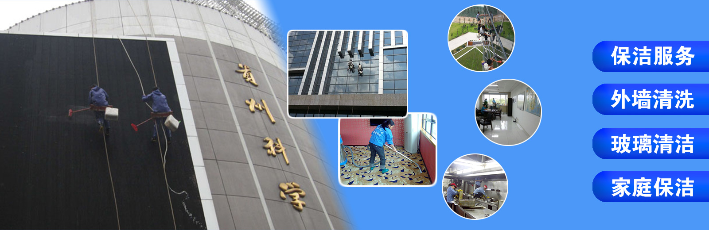
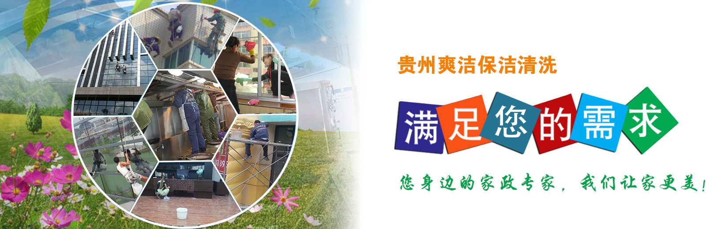
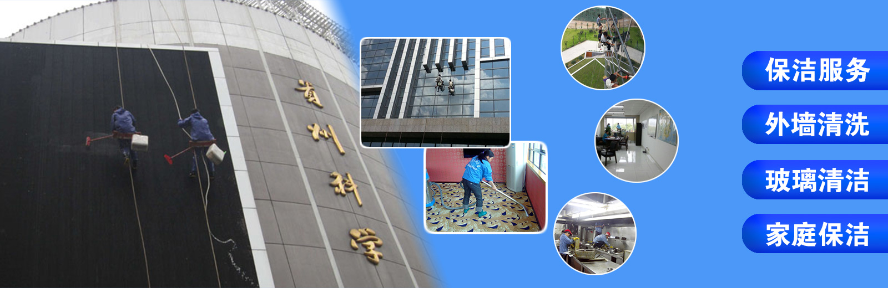
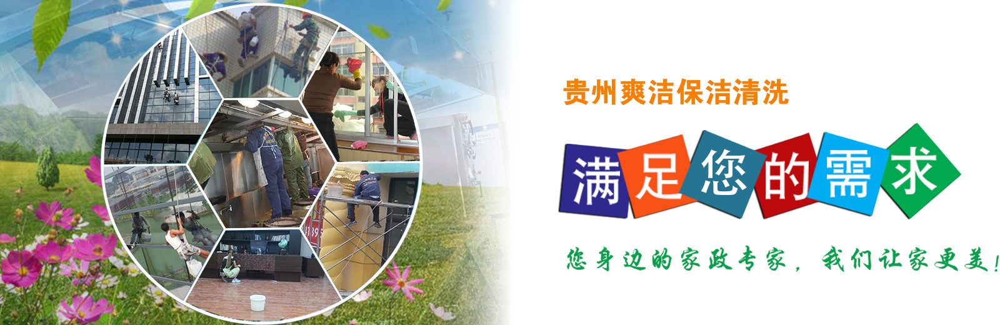

贵州爽洁家政有限公司成立于2009年，是一家经工商局正规注册的专业贵阳家政服务公司，公司专业承接各类贵阳外墙清洗、贵阳玻璃幕墙清洗、贵阳防水工程、贵阳开荒保洁、贵阳钟点工服务、贵阳地板打蜡、贵阳地毯清洗等各类高空清洁业务和贵阳保姆、贵阳月嫂、贵阳育婴等各项家政服务项目。 公司一贯遵循“客户至上,至诚至信,成己为人,以心换心,成人达己,人兴己兴”的服务精神,坚持高定位,高质量,高效率的三高服务标准,在我公司日常管理工作中,公司充分发挥和挖掘内部潜力,培养了一批专业化管理人员,经验丰富,管理能力强,工作认真,作风严谨,思维敏捷,工作勤勤恳恳,兢兢业业,一丝不苟的服务精神,在管理工作中,耐心细致,严格按照公司制定的各项管理规章制度开展工作,达到公司专业管理标准,制定相应的管理措施和考核制度,经过努力的发展积累
最新案例
资讯动态
关于我们
/ ABOUT US